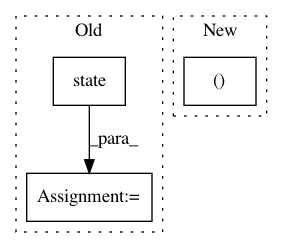

58856e2b8b766e076d13afa935324d517fa9388f,research/lstm_object_detection/models/lstm_ssd_mobilenet_v1_feature_extractor.py,LSTMMobileNetV1FeatureExtractor,extract_features,#LSTMMobileNetV1FeatureExtractor#Any#Any#Any#Any#Any#,79
Before Change
init_state = lstm_cell.init_state(
state_name, net.shape[0].value / unroll_length, tf.float32)
else:
c = state_saver.state("%s_c" % state_name)
h = state_saver.state("%s_h" % state_name)
init_state = (c, h)
// Identities added for inputing state tensors externally.
After Change
// ConvLSTM layers.
batch_size = net.shape[0].value / unroll_length
with tf.variable_scope("LSTM", reuse=self._reuse_weights) as lstm_scope:
lstm_cell, init_state, _ = self.create_lstm_cell(
batch_size, (net.shape[1].value, net.shape[2].value), state_saver,
state_name)
net_seq = list(tf.split(net, unroll_length))
In pattern: SUPERPATTERN
Frequency: 3
Non-data size: 3
Instances
Project Name: tensorflow/models
Commit Name: 58856e2b8b766e076d13afa935324d517fa9388f
Time: 2019-05-07
Author: menglong@google.com
File Name: research/lstm_object_detection/models/lstm_ssd_mobilenet_v1_feature_extractor.py
Class Name: LSTMMobileNetV1FeatureExtractor
Method Name: extract_features
Project Name: pantsbuild/pants
Commit Name: 87354a5b766032227e7b25ba93deaa8fd8e3e57f
Time: 2016-02-26
Author: stuhood@gmail.com
File Name: tests/python/pants_test/engine/exp/test_graph.py
Class Name: GraphTestBase
Method Name: resolve_failure
Project Name: pantsbuild/pants
Commit Name: 87354a5b766032227e7b25ba93deaa8fd8e3e57f
Time: 2016-02-26
Author: stuhood@gmail.com
File Name: tests/python/pants_test/engine/exp/test_graph.py
Class Name: GraphTestBase
Method Name: resolve